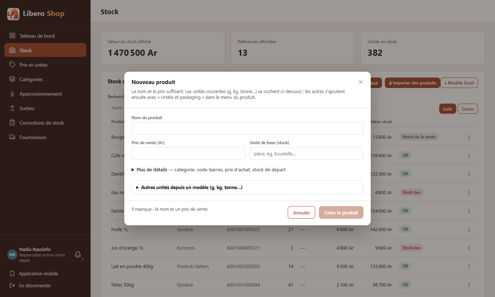
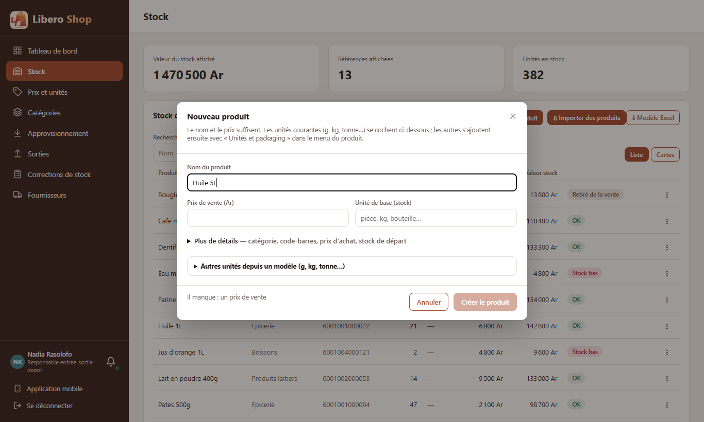
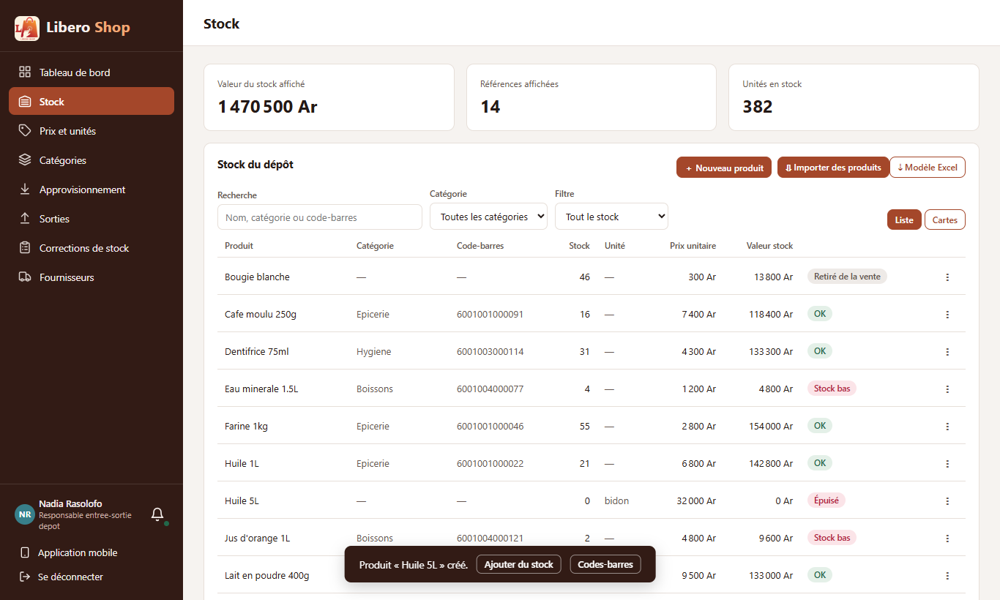
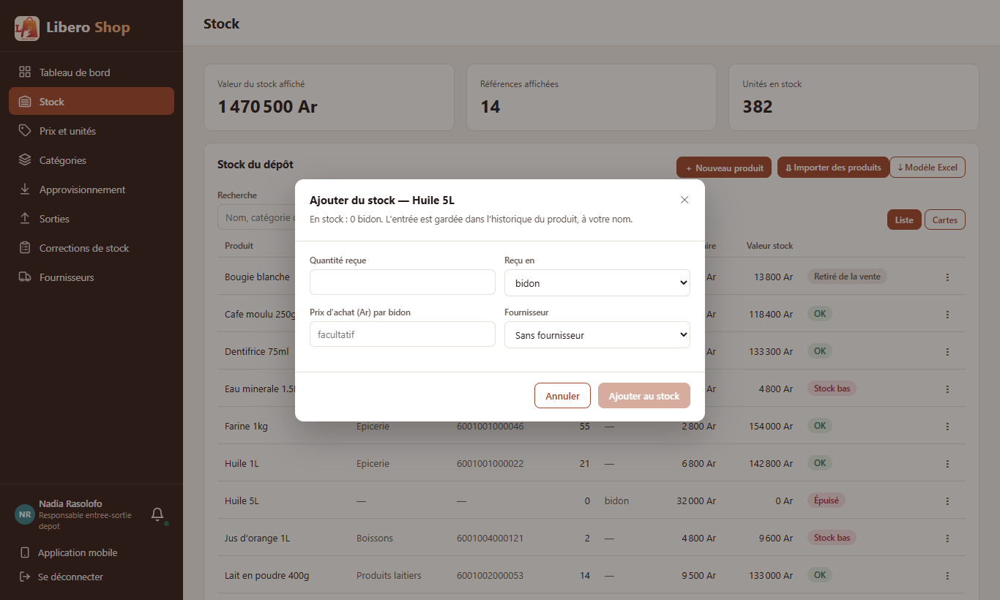

← Tous les comptes rendus de l'interface
UI-12UI-91Nouveau produit : l'essentiel d'abord
Résumé
- « Nouveau produit » ne montre d'abord que le nom, le prix et l'unité ; catégorie, code-barres, prix d'achat et stock de départ sont repliés sous « Plus de détails ».
- Tant que « Créer le produit » est grisé, une phrase dit ce qui manque (« Il manque : un prix de vente »).
- Après la création, le message propose la suite : « Ajouter du stock » et « Codes-barres », d'un clic.
- Le champ Code-barres a la même largeur que les autres.
- Les messages de l'application peuvent maintenant porter des boutons : UI-83 (« Annuler ») s'en servira.
1. Le problème
La fenêtre montrait huit champs, alors que trois suffisent. Le bouton restait grisé sans dire pourquoi. Une fois le produit créé, il fallait le retrouver dans la liste pour lui ajouter du stock ou un code.
2. Ce qui a été fait
Figure 1 — L'essentiel d'abord, puis la suite proposée dans le message.
« Plus de détails » s'ouvre tout seul quand quelque chose y est déjà rempli : un code scanné inconnu (UI-21) ou une copie de produit (UI-02). « Ajouter du stock » n'est proposé qu'au responsable de dépôt, comme dans le menu.
3. Le résultat en images
Nadia — responsable de dépôt

Figure 2 — Trois champs ; le reste replié.

Figure 3 — Le bouton grisé dit ce qu'il attend : un prix de vente.

Figure 4 — Le produit est créé ; le message propose la suite.

Figure 5 — « Ajouter du stock » ouvre la réception, dans l'unité du produit (bidon).
4. Tableau récapitulatif
| Fichier | Changement |
|---|---|
ui/…/shared/components/product-create-dialog.component.ts | « Plus de détails » replié, « Il manque : … », champ code-barres aligné, message optionnel |
ui/…/shared/components/product-dialogs.component.ts | message de création avec « Ajouter du stock » et « Codes-barres » |
ui/…/core/services/toast.service.ts, shared/components/toast.component.ts, ui/src/styles.scss | des boutons dans les messages |
| Règle | Test |
|---|---|
| Nom, prix, unité d'abord ; le reste replié, ouvert si un code est déjà là | product-create-dialog.component.spec.ts |
| Ce qui manque est écrit, jusqu'à ce que rien ne manque | idem |
| Un bouton du message lance l'action et ferme le message | toast.service.spec.ts |
Tests : interface au vert (250 tests). Aucun changement côté serveur.